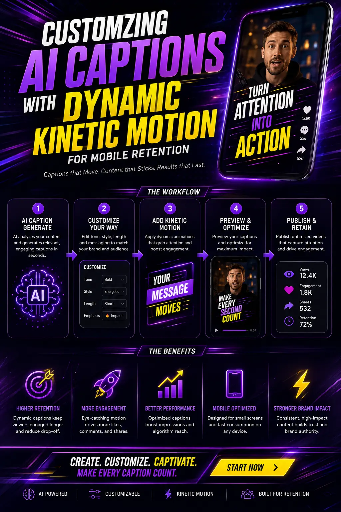
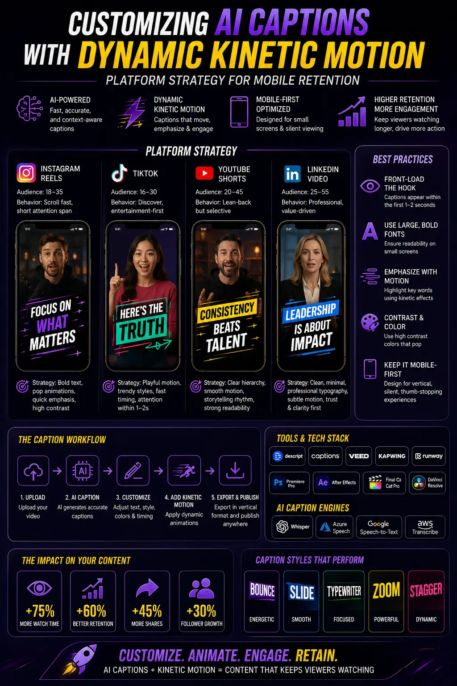

Customizing AI Captions with Dynamic Kinetic Motion for Mobile Retention
The Shift to Soundless Consumption in Mobile Video Feeds
In the fast-evolving digital marketing landscape, capturing user attention on mobile devices has become both an art and a science. With the explosive rise of vertical video formats across Instagram Reels, TikTok, YouTube Shorts, and LinkedIn, video content dominates social feeds. However, performance marketers face a significant structural reality: over 85% of mobile users browse social media feeds with their audio turned off. Whether scrolling during daily commutes, inside quiet office environments, or late at night, audiences routinely consume content in silence. Consequently, relying solely on spoken dialogue or voiceovers without immediate visual text guarantees high bounce rates and lost conversions.
To overcome this challenge, modern creators utilize soundless feed captions as an essential visual layer. Standard, static subtitle blocks that rest passively at the bottom of the screen no longer suffice. Mobile audiences demand continuous visual stimulation and clear typography. By deploying AI Auto-Caption Styling alongside Dynamic Mobile Video Typography, forward-thinking brands can transform ordinary transcriptions into high-impact, kinetic visual hooks that draw scrollers directly into the narrative.
Integrating Creative Advertising Text Motion into your video production workflow turns spoken audio into animated typography that pops, scales, and shifts color in sync with speech rhythm. Furthermore, when creative teams learn how to style captions with AI tools, they unlock scalable post-production capabilities. Leveraging kinetic text animation templates, Auto-caption plugins Premiere Pro, and Automated subtitle generators for Reels empowers video editors to execute professional mobile video retention editing at scale, turning casual viewers into engaged brand advocates.
The Psychology of Kinetic Text in Mobile Video Retention
Understanding why animated text commands such high attention requires examining human visual cognition. On mobile screens, the human eye is naturally programmed to track movement and sharp contrast variations. When a user scrolls rapidly through a social feed, static text often blends seamlessly into the background video footage. Conversely, when editors implement Dynamic Mobile Video Typography, each word materializes dynamically as it is spoken, establishing an addictive visual rhythm that matches the speaker's vocal tempo.
This technique serves as a continuous optical pattern interrupt. By incorporating kinetic text animation templates, post-production teams anchor the viewer's eyes to the exact center of the vertical video frame. Rather than forcing the user to read blocks of static paragraph text—which causes cognitive fatigue and induces fast scrolling—kinetic text delivers information in digestible 1-to-3 word bursts. This precise delivery method minimizes cognitive load while keeping the audience visually fascinated.
Furthermore, effective mobile video retention editing leverages strategic color coding and font scaling to emphasize emotional triggers and value propositions. For example, key verbs, numerical figures, or core brand benefits can be automatically highlighted in energetic accent colors such as bright yellow, electric green, or vibrant cyan. This ensures that even if a scroller only glances at the video for two seconds, the core message of Creative Advertising Text Motion penetrates their awareness, compelling them to pause their scroll and watch the complete message play out.
Unlocking Efficiency: How to Style Captions with AI Engines
Historically, animating subtitle text word-by-word required tedious manual keyframing inside complex motion graphics software like Adobe After Effects. Video editors spent hours manually slicing text layers, adjusting timing curves, and aligning typography to audio waveforms—a workflow that was impossible to scale for daily social media publishing. Today, artificial intelligence has completely transformed post-production, allowing creators to style captions with AI applications in seconds rather than hours.
Modern speech-to-text algorithms provide astonishing accuracy across various accents, speech speeds, and background noise levels. Beyond simple transcription, advanced AI Auto-Caption Styling software generates millisecond-accurate word timestamps. This timestamp data enables editing software to apply entrance transitions, scale pop-ins, and color fills automatically on an individual word basis.
Instead of starting every project from scratch, editors can build or select custom kinetic text animation templates that align perfectly with brand identity guidelines. AI caption engines automatically format font family, font weight, drop shadow depth, stroke boundaries, and background box overlays to guarantee high contrast across varying video scenes. Utilizing Automated subtitle generators for Reels streamlines editing pipelines, allowing agencies and brands to produce dozens of high-retention vertical video assets daily without sacrificing visual polish.
Elevated View Retention
Combining soundless feed captions with mobile video retention editing keeps scrollers engaged up to 300% longer on silent feeds, driving watch time and organic reach.
Rapid Post-Production
Deploying Automated subtitle generators for Reels and Auto-caption plugins Premiere Pro reduces subtitle editing time by 80%, accelerating content output.
Consistent Brand Identity
Utilizing Dynamic Mobile Video Typography and customized AI Auto-Caption Styling guarantees uniform fonts, brand colors, and broadcast-quality visual standards.
Higher Ad Conversions
Implementing Creative Advertising Text Motion with kinetic text animation templates visually reinforces key offers, boosting click-through rates on muted ad placements.

Integrating Auto-Caption Plugins in Premiere Pro and Enterprise Workflows
For professional post-production teams operating within Non-Linear Editing (NLE) environments, maintaining an integrated editing pipeline is essential. Installing native Auto-caption plugins Premiere Pro brings automated speech recognition, word-level timestamp generation, and custom kinetic styling directly into the master editing timeline. This eliminates the need to continuously export raw files to external web apps and re-import burned-in video exports, keeping vector graphic layers fully editable throughout the project lifecycle.
When configuring Auto-caption plugins Premiere Pro, editors establish standardized graphic style presets. By pairing AI transcription algorithms with master Motion Graphics Templates (.mogrt files), editors ensure that kinetic text animation templates automatically adopt brand-approved typefaces, stroke thicknesses, shadow distances, and animation curves. This seamless synthesis of AI automation and professional NLE control ensures maximum creative flexibility.
Crucially, executing high-converting mobile video retention editing requires strict adherence to vertical UI safe zones. Social media platforms like Instagram, TikTok, and YouTube Shorts overlay dynamic interface icons—including channel logos, usernames, sound titles, like buttons, and comment drawers—over vertical 9:16 frames. By programming Automated subtitle generators for Reels to anchor text within the central 1080×1350 pixel safe box, editors ensure that soundless feed captions remain crystal clear and unobscured across all mobile device screen resolutions.
Tactical Strategies for Creative Advertising Text Motion
To achieve superior retention metrics, video editors must go beyond basic transcription and implement specialized Creative Advertising Text Motion techniques tailored for high-performing paid and organic social feeds:
- Word-Level Display Beats: Avoid showing long sentences or full paragraphs on screen. Optimal mobile video retention editing limits active visible text to 1 to 3 words per animation beat, creating a rapid visual tempo that matches fast-paced cognitive processing.
- Kinetic Scale Pop-Ins: Apply a subtle 110% scale keyframe on the initial frame of important words. This optical pop mimics vocal emphasis, immediately anchoring viewer focus to the central narrative message.
- Dynamic Accent Swaps: Configure AI caption software to default soundless feed captions to crisp white text, but automatically color-code action verbs, stats, and problem-solution terms in high-visibility brand colors like bright yellow or neon orange.
- Multi-Directional Motion Paths: When deploying Dynamic Mobile Video Typography, combine subtle vertical rises, horizontal slides, and subtle rotations to transition between key phrases, preventing visual monotony across longer video durations.
- Subtle Audio FX Alignment: Pair visual kinetic text entrances with subtle pop, whoosh, or typewriter sound effects. While the primary objective is engaging silent scrollers, viewers who unmute their audio experience a rich multi-sensory brand experience.
By mastering these tactical parameters, creators who style captions with AI systems elevate simple voiceover videos into polished, high-budget commercial assets that command respect and drive action across competitive social feeds.
Software & Plugin Suite
- Direct integration with Auto-caption plugins Premiere Pro and After Effects.
- Cloud AI platforms like Submagic, Descript, and CapCut Pro featuring Automated subtitle generators for Reels.
- Custom MOGRT asset development for enterprise branding.
- Native timeline speech-to-text engines.
Design & Layout Standards
- High-legibility sans-serif fonts optimized for Dynamic Mobile Video Typography.
- Semi-transparent dark bounding boxes and 4px black outline strokes.
- Strict vertical safe-zone positioning for 9:16 vertical displays to protect soundless feed captions.
- High-contrast accent color palettes (Yellow, Neon Green, Cyan).
Retention & Growth Strategy
- Performance-driven mobile video retention editing for Meta, TikTok, and YouTube Ads.
- Automated editing presets that allow creators to style captions with AI at high volume.
- Custom kinetic text animation templates embodying Creative Advertising Text Motion.
- Comprehensive visual hook and pacing optimization.

Overcoming Subtitle Styling Pitfalls & Exploring Future AI Trends
While AI Auto-Caption Styling offers revolutionary production speed, improper execution can impair visual clarity and reduce viewer retention. Video editors must remain vigilant to avoid critical captioning mistakes:
- Visual Over-Saturation: Over-animating every single word with aggressive spins or chaotic bouncing effects creates visual fatigue. Kinetic motion should support speech rhythm, not distract from the primary video content.
- Insufficient Color Contrast: Displaying light text directly over bright or complex video backgrounds without stroke borders or drop shadows makes text unreadable. High contrast is mandatory for effective soundless feed captions.
- Unverified AI Transcriptions: Automatic speech recognition can occasionally misinterpret technical terminology, brand names, or local slang. Editors should always perform a rapid proofread before exporting final kinetic text animation templates.
Looking ahead, the integration of real-time computer vision and multimodal generative AI will take Dynamic Mobile Video Typography to extraordinary heights. Future editing tools will analyze facial expressions, vocal emotion, and video pacing in real time to automatically adjust font weights, animation speeds, and color schemes to match scene sentiment. Additionally, instant neural multi-language translation will allow creators to generate localized, kinetic captions in dozens of global languages simultaneously, enabling effortless international expansion.
Conclusion: Transforming Mobile Feeds with The PhD Ads
In today's hyper-competitive digital landscape, capturing and retaining mobile audience attention demands a seamless combination of compelling narrative strategy and visual innovation. Because mobile video feeds remain overwhelmingly silent, mastering Creative Advertising Text Motion, AI Auto-Caption Styling, and mobile video retention editing is no longer just an optional enhancement—it is the foundational requirement for scalable video marketing success.
By utilizing cutting-edge Auto-caption plugins Premiere Pro, professional kinetic text animation templates, and reliable Automated subtitle generators for Reels, brands can effortlessly style captions with AI and turn passive scrollers into passionate customers.
At The PhD Ads in Madurai, we specialize in helping businesses dominate mobile social media feeds with high-impact video advertising, dynamic typography, and retention-focused creative strategy. Our team of expert video editors and performance strategists crafts bespoke kinetic caption systems engineered to reflect your brand's unique identity while maximizing watch time and ad ROI. Contact us today to transform your social video assets and supercharge your marketing campaigns.
Key Topics
Ready to Transform Your Social Videos with High-Retention AI Kinetic Captions?
At The PhD Ads in Madurai, we specialize in Creative Advertising Text Motion, AI Auto-Caption Styling, Dynamic Mobile Video Typography, and mobile video retention editing to ensure your social video ads command attention, retain scrollers, and maximize campaign ROI.
Email: team@e2o.in